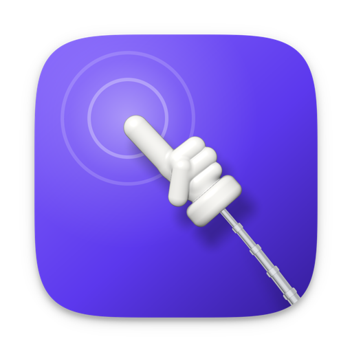
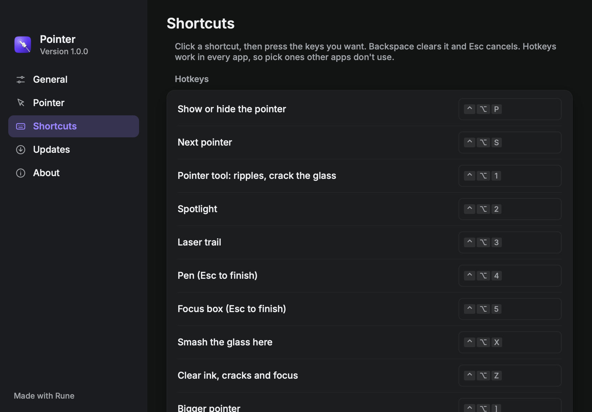
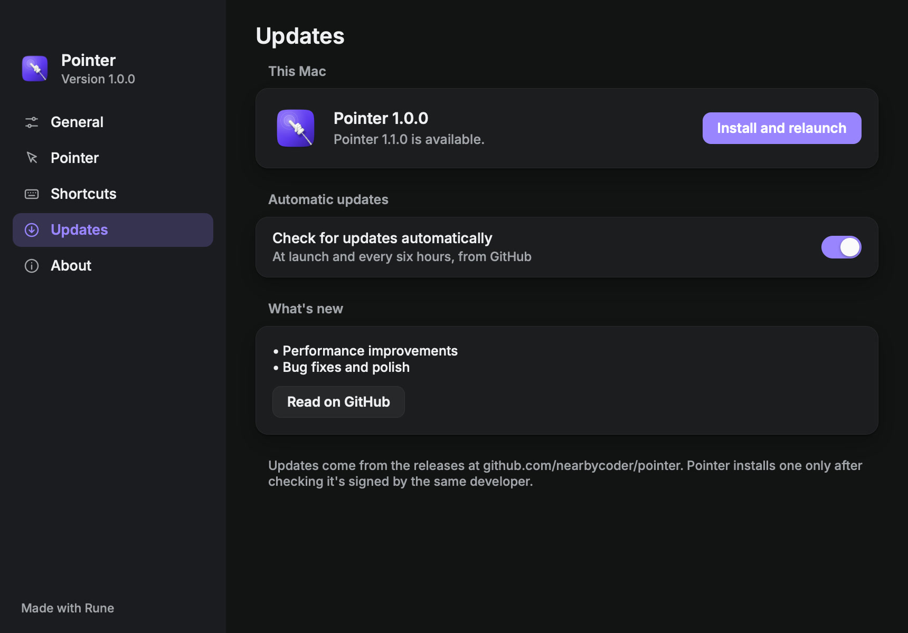

Tap and charge
⌃⌥1Every click sends out a ripple. Tap fast or hold still, and a dial winds up around your fingertip.

Pointer DownloadPointer puts a big, bouncy glove on a telescoping pole over everything on your Mac. Tap to ripple, wind up a charge, crack the glass, then grab a spotlight, a laser, a pen or a focus box to show people exactly where to look.
Version 1.0.0·Free and open source·macOS 13 or later, Apple silicon and Intel·Signed and notarized by Apple
Rendered by Pointer itself, sound and all. Nothing here is mocked up.
Tools
Switch tools with a hotkey while you talk. Pointer lets your clicks through to the app underneath, so you can keep presenting.
Every click sends out a ripple. Tap fast or hold still, and a dial winds up around your fingertip.
Fill the dial and the glass cracks, with a crunch to match. Smash it on cue, and ⌃⌥Z sweeps it up.
Everything but your fingertip dims, so the room follows your hand.
Draw a glowing trail that fades on its own: ideal for tracing a path through a diagram.
Drag to draw right on the screen. Esc puts the pen down; your clicks go back to your apps.
Drag a box around the part that matters and everything else steps back.
Pointers
Five of them, each with its own moves and sounds. ⌃⌥S flips to the next one mid-sentence.
Feel
Drawn with Metal at your display's full refresh rate. The pole's springs run at 600 Hz, so it bends, overshoots and settles like it has weight.
Pops, crunches, hums and squawks, all synthesized live as you point. Not a single sample file. One hotkey mutes it.
Pointer covers every display and shows up in screen shares and recordings, so the people watching see it too.
Settings
Open Settings from the menu bar, or press ⌃⌥,, to change any shortcut: click it and press the keys you want. Choose your pointer, its size and the laser sword's colour, and whether Pointer opens at login.
| Show or hide the pointer | ⌃⌥P |
| Next pointer | ⌃⌥S |
| Pointer, spotlight, laser, pen, focus | ⌃⌥1–5 |
| Smash the glass | ⌃⌥X |
| Clear ink, cracks and focus | ⌃⌥Z |
| Bigger or smaller | ⌃⌥] ⌃⌥[ |
| Show or hide the system cursor | ⌃⌥C |
| Sound on or off | ⌃⌥M |
| Frame-rate readout | ⌃⌥0 |
| Hotkey cheat sheet | ⌃⌥/ |
| Settings | ⌃⌥, |
| Quit Pointer | ⌃⌥Q |


Updates
Pointer looks for a new release on GitHub when it starts and every six hours after. One click downloads it, checks it, swaps it in and relaunches.
FAQ
Yes. Pointer is free and open source under the MIT License. The code is on GitHub.
No. Pointer draws over your screen but lets every click through to the app underneath. Only the pen and focus tools take the mouse, and Esc hands it straight back.
Yes. Pointer draws on your screen like any window does, so screen shares and recordings include it.
No. There's no Accessibility or Screen Recording prompt. Pointer follows your mouse and listens for its own hotkeys, nothing more.
Any Mac with macOS 13 Ventura or later, Apple silicon or Intel. It draws at up to 120 frames a second on ProMotion displays.
Choose Quit Pointer from its menu bar item, or press ⌃⌥Q. To uninstall, quit it and drag Pointer from Applications to the Trash.
Free for macOS. Signed, notarized and ready in a minute.
Version 1.0.0·Or get the .zip·Every release